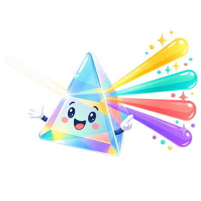

Why meaning comes first

Denotational Design chooses a program's meaning first, then derives vocabulary, representation, and execution strategy to preserve it. This page contrasts that semantic order with the representation-first order most software follows.
Most software is designed in the order in which it will run:
- Choose state.
- Choose control flow.
- Expose methods around that machinery.
- Explain afterward what the methods were intended to mean.
Denotational Design reverses that order:
- Choose meaning.
- Identify its compositional structure.
- Derive a vocabulary from that structure.
- Choose representations and execution strategies.
- Verify that they preserve the meaning.
This reversal is the semantic view.
Concepts and Insights explain useful programming machinery. Denotational Design explains how to decide what machinery should preserve.
Three questions
Keep three questions separate while designing a program.
| View | Question | Typical artifacts |
|---|---|---|
| Semantic | What does this program mean? | values, relations, functions, equations, laws |
| Representational | How is that meaning encoded? | Rust types, traits, ASTs, tables, trees, bytecode |
| Operational | How does the representation execute? | loops, mutation, tasks, messages, interpreters, virtual machines |
All three views matter. The mistake is allowing representation or execution to silently define the semantic view.
An operational semantics is a precise and valuable account of execution. It can describe every transition made by an evaluator. It still answers a different design question from a denotational account. The denotational question is which observable mathematical value the whole program denotes and which equations should hold regardless of execution strategy.
A small example
Suppose a system identifies positions in a branching process.
A representation-first design may begin with a bit vector:
struct BranchId(Vec<bool>);Methods then grow around the fields: append a bit, slice a prefix, compare vectors, serialize bytes.
The semantic view starts elsewhere:
- There is a root position.
- A position can grow left or right.
- One position may be an ancestor of another.
- The path between ancestor and descendant can be observed.
Those statements remain meaningful if the representation later becomes an integer, a tree coordinate, a compact hybrid value, or a database key. The bit vector is one interpretation of branch position, not its definition.
Meaning is not documentation after the fact
Writing prose about a concrete API does not make the design denotational. Meaning must constrain the API before the representation is chosen.
A semantic account should tell us:
- which distinctions matter
- which observations are primitive
- how larger meanings compose
- which equations are valid
- what every implementation must preserve
- which details are intentionally forgotten
If the only precise artifact is a state struct or an execution loop, the implementation still owns the meaning.
Abstraction versus meaning
An interface can hide machinery without explaining meaning:
trait ApplicationContext {
fn database(&self) -> &Database;
fn settings(&self) -> &Settings;
fn runtime(&self) -> &Runtime;
}This interface abstracts access to concrete components. It does not state the semantic observations required by a computation.
A meaning-oriented interface asks for the observation itself:
trait BranchAlg {
type Branch;
fn branch_root(&self) -> Self::Branch;
fn branch_grow(&self, branch: &Self::Branch, direction: Direction) -> Self::Branch;
fn branch_path(
&self,
ancestor: &Self::Branch,
descendant: &Self::Branch,
) -> Option<Vec<Direction>>;
}Dependency inversion is helpful, but Denotational Design demands more: the abstraction boundary must be organized around meaning rather than storage location.
The direction of authority
When artifacts disagree, do not give authority to whichever one is closest to running code. Ask what each artifact is required to preserve.
| Role | What belongs here | Responsibility |
|---|---|---|
| Meaning | Intended observations, distinctions, and equalities of the domain | Decides what correctness means |
| Specification | Semantic domains, denotations, types, primitive operations, laws, and derived compositions | States that meaning precisely |
| Realization | Concrete representations, interpreters, compilers, runtimes, storage, and scheduling | Implements the specification without changing it |
| Evidence | Proofs, law checks, scenarios, and cross-interpreter comparisons | Connects a realization to the specification; it does not define the meaning by itself |
This gives a practical rule for resolving disagreement:
- If an implementation violates a semantic law, change the implementation.
- If a test contradicts the law it was meant to check, change the test.
- If the formal specification fails to express the intended domain meaning, revise the specification.
An artifact is classified by its role, not its syntax. A Rust trait or first-order program may belong to the specification when it directly preserves chosen semantic structure; another Rust type may be only one concrete encoding. A formal operational semantics may also be part of a language specification, but its transitions remain accountable to the observations and equivalences the language intends.
CPS, defunctionalization, free monads, virtual machines, protocol runtimes, and compiler pipelines can now be placed without asking which one is the final abstraction. Each is a useful representation or execution technique for particular consumers. The semantic specification tells us what every chosen technique must preserve.